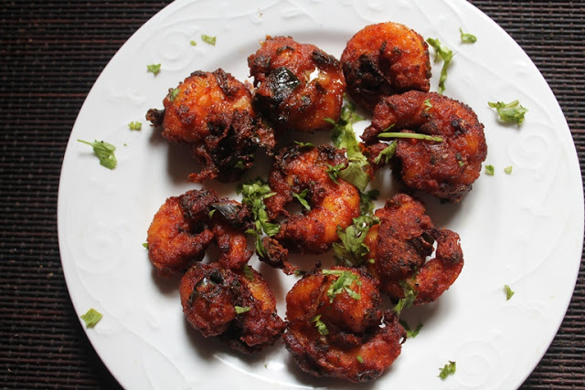

Prawn 65

Description
Prawn 65 is a crispy, spicy, and flavorful appetizer that is perfect for seafood lovers! Made with fresh prawns marinated in a blend of spices, ginger-garlic paste, and a hint of lemon juice, this dish is then coated in cornflour and deep-fried to golden perfection. The crispy texture on the outside with juicy, tender prawns inside makes it an irresistible snack. Whether served as a starter or a side dish, Prawn 65 pairs perfectly with mint chutney or a squeeze of lemon. Try this easy and delicious recipe for a restaurant-style treat at home.
Ingredients
- Prawn - 250 g
- Ginger Garlic Paste - 1 tsp
- Red Chilli Powder - 1 tsp
- Tumeric Powder - 1 tsp
- Garam Masala - ½ tsp
- Black Pepper Powder - ½ tsp
- Lemon Juice - 1 tsp
- Soy Sauce - 1 tsp
- cornflour - 1 tsp
- Riceflour - 1 tsp
- Egg - 1
Steps
- Mix prawns with ginger-garlic paste, spices, lemon juice, soy sauce, cornflour, rice flour, egg, and salt. Let it rest for 15-20 minutes.
- In a deep pan, heat oil for frying.
- Drop marinated prawns into hot oil and fry until golden and crispy.
- In the same oil, fry curry leaves and sliced green chili for extra flavor.
- Toss fried prawns with curry leaves, squeeze lemon juice, and serve hot.